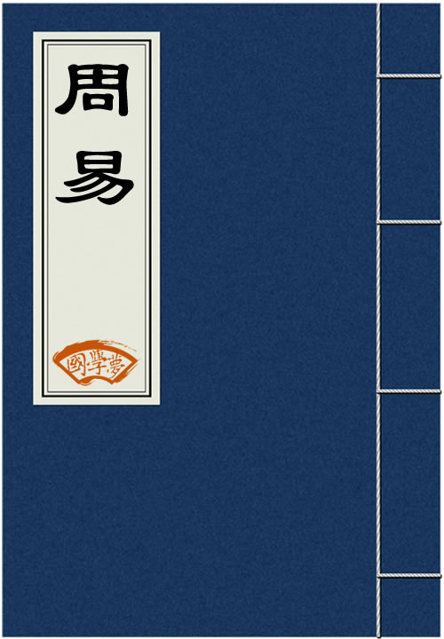

传播国学经典
养育华夏儿女
搜索
首页
国学经典
古诗
诗词名句
诗人大全
成语大全
三字经
千字文
论语
易经
大学
中庸
唐诗
历史
国学知识
古诗鉴赏
当前位置:
国学梦
>
国学经典
>
周易
>

周易
《周易》即《易经》，《三易》之一（汉初刘向校书时《三易》仍存，汉后下落不明），是传统经典之一，相传系周文王姬昌所作，内容包括《经》和《传》两个部分。《经》主要是六十四卦和三百八十四爻，卦和爻各有说明（卦辞、爻辞），作为占卜之用。《周易》没有提出阴阳与太极等概念，讲阴阳与太极的是被道家与阴阳家所影响的《易传》。学易经联系微信：15373583333 （报国学梦网站有优惠）
周易第一卦：乾卦 乾为天 乾上乾下
周易第二卦：坤卦 坤为地 坤上坤下
周易第三卦：屯卦 水雷屯 坎上震下
周易第四卦：蒙卦 山水蒙 艮上坎下
周易第五卦：需卦 水天需 坎上乾下
周易第六卦：讼卦 天水讼 乾上坎下
周易第七卦：师卦 地水师 坤上坎下
周易第八卦：比卦 水地比 坎上坤下
周易第九卦：小畜卦 风天小畜 巽上乾下
周易第十卦：履卦 天泽履 乾上兑下
周易第十一卦：泰卦坤 天地泰 坤上乾下
周易第十二卦：否卦 地天否 乾上坤下
周易第十三卦：同人卦 天火同人 乾上离下
周易第十四卦：大有卦 火天大有 离上乾下
周易第十五卦：谦卦 地山谦 坤上艮下
周易第十六卦：豫卦 雷地豫 震上坤下
周易第十七卦：随卦 泽雷随 兑上震下
周易第十八卦：蛊卦 山风蛊 艮上巽下
周易第十九卦：临卦 地泽临 坤上兑下
周易第二十卦：观卦 风地观 巽上坤下
周易第二十一卦：噬嗑卦 火雷噬嗑 离上震下
周易第二十二卦：贲卦 山火贲 艮上离下
周易第二十三卦：剥卦 山地剥 艮上坤下
周易第二十四卦：复卦 地雷复 坤上震下
周易第二十五卦：无妄卦 天雷无妄 乾上震下
周易第二十六卦：大畜卦 山天大畜 艮上乾下
周易第二十七卦：颐卦 山雷颐 艮上震下
周易第二十八卦：大过卦 泽风大过 兑上巽下
周易第二十九卦：坎卦 坎为水 坎上坎下
周易第三十卦：离卦 离为火 离上离下
周易第三十一卦：咸卦 泽山咸 兑上艮下
周易第三十二卦：恒卦 雷风恒 震上巽下
周易第三十三卦：遁卦 天山遁 乾上艮下
周易第三十四卦：大壮卦 雷天大壮 震上乾下
周易第三十五卦：晋卦 火地晋 离上坤下
周易第三十六卦：明夷卦 地火明夷 坤上离下
周易第三十七卦：家人卦 风火家人 巽上离下
周易第三十八卦：睽卦 火泽睽 离上兑下
周易第三十九卦：蹇卦 水山蹇 坎上艮下
周易第四十卦：解卦 雷水解 震上坎下
周易第四十一卦：损卦 山泽损 艮上兑下
周易第四十二卦：益卦 风雷益 巽上震下
周易第四十三卦：夬卦 泽天夬 兑上乾下
周易第四十四卦：姤卦 天风姤 乾上巽下
周易第四十五卦：萃卦 泽地萃 兑上坤下
周易第四十六卦：升卦 地风升 坤上巽下
周易第四十七卦：困卦 泽水困 兑上坎下
周易第四十八卦：井卦 水风井 坎上巽下
周易第四十九卦：革卦 泽火革 兑上离下
周易第五十卦：鼎卦 火风鼎 离上巽下
周易第五十一卦：震卦 震为雷 震上震下
周易第五十二卦：艮卦 艮为山 艮上艮下
周易第五十三卦：渐卦 风山渐 巽上艮下
周易第五十四卦：归妹卦 雷泽归妹 震上兑下
周易第五十五卦：丰卦 雷火 震上离下
周易第五十六卦：旅卦 火山旅 离上艮下
周易第五十七卦：巽卦 巽为风 巽上巽下
周易第五十八卦：兑卦 兑为泽 兑上兑下
周易第五十九卦：涣卦 风水涣 巽上坎下
周易第六十卦：节卦 水泽节 坎上兑下
周易第六十一卦：中孚卦 风泽中孚 巽上兑下
周易第六十二卦：小过卦 雷山小过 震上艮下
周易第六十三卦：既济卦 水火既济 坎上离下
周易第六十四卦：未济卦 火水未济 离上坎下
周易第一卦乾卦详解 元，亨，利，贞。
周易第一卦乾卦初九爻详解 潜龙勿用
周易第一卦乾卦九二爻详解 见龙在田，利见大人
周易第一卦乾卦九三爻详解 君子终日乾乾，夕惕若;厉，无咎。
周易第一卦乾卦九四爻详解 或跃在渊，无咎。
周易第一卦乾卦九五爻详解 飞龙在天，利见大人。
周易第一卦乾卦上九爻详解 亢龙有悔
周易第二卦坤卦详解 元，亨，利牝马之贞。君子有攸往，先迷后得主。利西南
周易第二卦坤卦初六爻详解 履霜，坚冰至。
周易第二卦坤卦六二爻详解 直，方，大，不习无不利。
周易第二卦坤卦六三爻详解 含章可贞。或从王事，无成有终。
周易第二卦坤卦六四爻详解 括囊，无咎，无誉。
周易第二卦坤卦六五爻详解 黄裳，元吉。
周易第二卦坤卦上六爻详解 龙战于野，其血玄黄。
周易第三卦屯卦详解 元，亨，利，贞。勿用，有攸往，利建侯。
周易第三卦屯卦初九爻详解 盘桓，利居贞，利建侯。
周易第三卦屯卦六二爻详解 屯如邅如，乘马班如。匪寇婚媾，女子贞不字，十
周易第三卦屯卦六三爻详解 即鹿无虞，惟入于林中。君子几不如舍。往吝。
周易第三卦屯卦六四爻详解 乘马班如，求婚媾，往吉，无不利。
周易第三卦屯卦九五爻详解 屯其膏，小贞吉，大贞凶。
周易第三卦屯卦上六爻详解 乘马班如，泣血涟如。
周易第四卦蒙卦详解 亨。匪我求童蒙，童蒙求我。初筮告，再三渎，渎则不告
周易第四卦蒙卦初六爻详解 发蒙，利用刑人，用说桎梏。以往，吝。
周易第四卦蒙卦九二爻详解 包蒙吉。纳妇吉。子克家。
周易第四卦蒙卦六三爻详解 勿用娶女，见金夫，不有躬。无攸利。
周易第四卦蒙卦六四爻详解 困蒙，吝。
周易第四卦蒙卦六五爻详解 童蒙，吉。
周易第四卦蒙卦上九爻详解 击蒙。不利为寇，利御寇。
周易第五卦需卦详解 需。有孚，光亨，贞吉。利涉大川。
周易第五卦需卦初九爻详解 需于郊，利用恒，无咎。
周易第五卦需卦九二爻详解 需于沙，小有言，终吉。
周易第五卦需卦九三爻详解 需于泥，致寇至。
周易第五卦需卦六四爻详解 需于血，出自穴。
周易第五卦需卦九五爻详解 需于酒食，贞吉。
周易第五卦需卦上六爻详解 入于穴，有不速之客三人来，敬之终吉。
周易第六卦讼卦详解 有孚，窒惕，中吉，终凶。利见大人，不利涉大川。
周易第六卦讼卦初六爻详解 不永所事，小有言，终吉。
周易第六卦讼卦九二爻详解 不克讼，归而逋，其邑人三百户无眚。
周易第六卦讼卦六三爻详解 食旧德，贞厉，终吉。或从王事，无成。
周易第六卦讼卦九四爻详解 不克讼，复即命，渝安贞，吉。
周易第六卦讼卦九五爻详解 讼，元吉。
周易第六卦讼卦上九爻详解 或锡之鞶带，终朝三褫之。
周易第七卦师卦详解 贞，丈人吉，无咎。
周易第七卦师卦初六爻详解 师出以律，否臧凶。
周易第七卦师卦九二爻详解 在师中，吉无咎，王三锡命。
周易第七卦师卦六三爻详解 师或舆尸，凶。
周易第七卦师卦六四爻详解 师左次，无咎
周易第七卦师卦六五爻详解 田有禽，利执言，无咎。长子帅师，弟子舆尸，贞
周易第七卦师卦上六爻详解 大君有命，开国承家，小人勿用。
周易第八卦比卦详解 吉。原筮，元永贞，无咎。不宁方来，后夫凶。
周易第八卦比卦初六爻详解 有孚比之，无咎。有孚盈缶，终来有它吉。
周易第八卦比卦六二爻详解 比之自内，贞吉。
周易第八卦比卦六三爻详解 比之匪人
周易第八卦比卦六四爻详解 外比之，贞吉。
周易第八卦比卦九五爻详解 显比，王用三驱，失前禽。邑人不诫，吉。
周易第八卦比卦上六爻详解 比之无首，凶。
周易第九卦小畜卦详解 亨。密云不雨，自我西郊。
周易第九卦小畜卦初九爻详解 复自道，何其咎?吉。
周易第九卦小畜卦九二爻详解 牵复，吉。
周易第九卦小畜卦九三爻详解 舆说辐，夫妻反目。
周易第九卦小畜卦六四爻详解 有孚，血去惕出，无咎。
周易第九卦小畜卦九五爻详解 有孚挛如，富以其邻。
周易第九卦小畜卦上九爻详解 既雨既处，尚德载。妇贞厉。月几望，君子征凶
周易第十卦履卦详解 履虎尾，不咥人，亨。
周易第十卦履卦初九爻详解 素履，往无咎。
周易第十卦履卦九二爻详解 履道坦坦，幽人贞吉。
周易第十卦履卦六三爻详解 眇能视，跛能履。履虎尾，咥人，凶。武人为于大
周易第十卦履卦九四爻详解 履虎尾，愬愬，终吉。
周易第十卦履卦九五爻详解 夬履，贞厉。
周易第十卦履卦上九爻详解 视履考祥，其旋元吉。
周易第十一卦泰卦详解 小往大来，吉亨。
周易第十一卦泰卦初九爻详解 拔茅茹，以其汇，征吉。
周易第十一卦泰卦九二爻详解 包荒，用冯河，不遐遗，朋亡，得尚于中行。
周易第十一卦泰卦九三爻详解 无平不陂，无往不复。艰贞无咎。勿恤其孚，于
周易第十一卦泰卦六四爻详解 翩翩不富，以其邻，不戒以孚。
周易第十一卦泰卦六五爻详解 帝乙归妹，以祉元吉。
周易第十一卦泰卦上六爻详解 城复于隍，勿用师。自邑告命，贞吝。
周易第十二卦否卦详解 否之匪人。不利君子贞。大往小来。
周易第十二卦否卦初六爻详解 拔茅茹，以其汇，贞吉，亨。
周易第十二卦否卦六二爻详解 包承，小人吉；大人否，亨。
周易第十二卦否卦六三爻详解 包羞。
周易第十二卦否卦九四爻详解 有命无咎，畴离祉。
周易第十二卦否卦九五爻详解 休否，大人吉；其亡其亡，系于苞桑。
周易第十二卦否卦上九爻详解 倾否，先否后喜。
周易第十三卦同人卦详解 同人于野，亨。利涉大川，利君子贞。
周易第十三卦同人卦初九爻详解 同人于门，无咎。
周易第十三卦同人卦六二爻详解 同人于宗，吝。
周易第十三卦同人卦九三爻详解 伏戎于莽，升其高陵，三岁不兴。
周易第十三卦同人卦九四爻详解 乘其墉，弗克攻，吉。
周易第十三卦同人卦九五爻详解 同人，先号啕而后笑，大师克相遇。
周易第十三卦同人卦上九爻详解 同人于郊，无悔。
周易第十四卦大有卦详解 元亨
周易第十四卦大有卦初九爻详解 无交害，匪咎；艰则无咎。
周易第十四卦大有卦九二爻详解 大车以载，有攸往，无咎。
周易第十四卦大有卦九三爻详解 公用亨于天子，小人弗克。
周易第十四卦大有卦九四爻详解 匪其彭，无咎。
周易第十四卦大有卦六五爻详解 厥孚交如，威如，吉。
周易第十四卦大有卦上九爻详解 自天祐之，吉无不利。
周易第十五卦谦卦详解 亨，君子有终。
周易第十五卦谦卦初六爻详解 谦谦君子，用涉大川，吉。
周易第十五卦谦卦六二爻详解 鸣谦，贞吉。
周易第十五卦谦卦九三爻详解 劳谦君子，有终吉。
周易第十五卦谦卦六四爻详解 无不利，撝谦。
周易第十五卦谦卦六五爻详解 不富以其邻，利用侵伐，无不利。
周易第十五卦谦卦上六爻详解 鸣谦，利用行师，征邑国。
周易第十六卦豫卦详解 利建侯行师
周易第十六卦豫卦初六爻详解 鸣豫，凶。
周易第十六卦豫卦六二爻详解 介于石，不终日，贞吉。
周易第十六卦豫卦六三爻详解 盱豫，悔。 迟有悔。
周易第十六卦豫卦九四爻详解 由豫，大有得，勿疑，朋盍簪。
周易第十六卦豫卦六五爻详解 贞疾，恒不死。
周易第十六卦豫卦上六爻详解 冥豫，成有渝，无咎。
周易第十七卦随卦详解 元亨，利贞，无咎。
周易第十七卦随卦初九爻详解 官有渝，贞吉。 出门交有功。
周易第十七卦随卦六二爻详解 系小子，失丈夫。
周易第十七卦随卦六三爻详解 系丈夫，失小子。随有求得，利居贞。
周易第十七卦随卦九四爻详解 随有获，贞凶。有孚在道，以明，何咎。
周易第十七卦随卦九五爻详解 孚于嘉，吉。
周易第十七卦随卦上六爻详解 拘系之，乃从维之。王用亨于西山。
周易第十八卦蛊卦详解 元亨，利涉大川。先甲三日，后甲三日。
周易第十八卦蛊卦初六爻详解 干父之蛊，有子，考无咎。厉，终吉。
周易第十八卦蛊卦九二爻详解 干母之蛊，不可贞。
周易第十八卦蛊卦九三爻详解 干父之蛊，小有悔，无大咎。
周易第十八卦蛊卦六四爻详解 裕父之蛊，往见吝。
周易第十八卦蛊卦六五爻详解 干父之蛊，用誉。
周易第十八卦蛊卦上九爻详解 不事王侯，高尚其事。
周易第十九卦临卦详解 元，亨，利，贞。至于八月有凶。
周易第十九卦临卦初九爻详解 咸临，贞吉。
周易第十九卦临卦九二爻详解 咸临，吉，无不利。
周易第十九卦临卦六三爻详解 甘临，无攸利。即忧之，无咎。
周易第十九卦临卦六四爻详解 至临，无咎。
周易第十九卦临卦六五爻详解 知临，大君之宜，吉。
周易第十九卦临卦上六爻详解 敦临，吉，无咎。
周易第二十卦观卦详解 盥而不荐，有孚顒若。
周易第二十卦观卦初六爻详解 童观，小人无咎，君子吝。
周易第二十卦观卦六二爻详解 窥观，利女贞。
周易第二十卦观卦六三爻详解 观我生，进退。
周易第二十卦观卦六四爻详解 观国之光，利用宾于王。
周易第二十卦观卦九五爻详解 观我生，君子无咎。
周易第二十卦观卦上九爻详解 观其生，君子无咎。
周易第二十一卦噬嗑卦详解 亨。利用狱。
周易第二十一卦噬嗑卦初九爻详解 屦校灭趾，无咎。
周易第二十一卦噬嗑卦六二爻详解 噬肤灭鼻，无咎。
周易第二十一卦噬嗑卦六三爻详解 噬腊肉，遇毒。小吝，无咎。
周易第二十一卦噬嗑卦九四爻详解 噬干胏，得金矢。利艰贞，吉。
周易第二十一卦噬嗑卦六五爻详解 噬干肉，得黄金。贞厉，无咎。
周易第二十一卦噬嗑卦上九爻详解 何校灭耳，凶。
周易第二十二卦贲卦详解 亨。小利有攸往。
周易第二十二卦贲卦初九爻详解 贲其趾，舍车而徒。
周易第二十二卦贲卦六二爻详解 贲其须
周易第二十二卦贲卦九三爻详解 贲如，濡如，永贞吉。
周易第二十二卦贲卦六四爻详解 贲如，皤如，白马翰如，匪寇婚媾。
周易第二十二卦贲卦六五爻详解 贲于丘园，束帛戋戋。吝，终吉。
周易第二十二卦贲卦上九爻详解 白贲，无咎。
周易第二十三卦剥卦详解 不利有攸往
周易第二十三卦剥卦初六爻详解 剥床以足，蔑贞，凶。
周易第二十三卦剥卦六二爻详解 剥床以辨，蔑贞，凶。
周易第二十三卦剥卦六三爻详解 剥之，无咎。
周易第二十三卦剥卦六四爻详解 剥床以肤，凶。
周易第二十三卦剥卦六五爻详解 贯鱼，以宫人宠，无不利。
周易第二十三卦剥卦上九爻详解 硕果不食，君子得舆，小人剥庐。
周易第二十四卦复卦详解 亨。出入无疾，朋来无咎。反复其道，七日来复，利
周易第二十四卦复卦初九爻详解 不远复，无只悔，元吉。
周易第二十四卦复卦六二爻详解 休复，吉。
周易第二十四卦复卦六三爻详解 频复，厉，无咎。
周易第二十四卦复卦六四爻详解 中行独复。
周易第二十四卦复卦六五爻详解 敦复，无悔。
周易第二十四卦复卦上六爻详解 迷复，凶，有灾眚。用行师，终有大败，以其
周易第二十五卦无妄卦详解 元，亨，利，贞。其匪正有眚，不利有攸往。
周易第二十五卦无妄卦初九爻详解 无妄，往吉。
周易第二十五卦无妄卦六二爻详解 不耕获，不菑畲，则利有攸往。
周易第二十五卦无妄卦六三爻详解 无妄之灾。或系之牛，行人之得，邑人之灾
周易第二十五卦无妄卦九四爻详解 可贞，无咎。
周易第二十五卦无妄卦九五爻详解 无妄之疾，勿药有喜。
周易第二十五卦无妄卦上九爻详解 无妄，行有眚，无攸利。
周易第二十六卦大畜卦详解 利贞，不家食，吉。利涉大川。
周易第二十六卦大畜卦初九爻详解 有厉，利已。
周易第二十六卦大畜卦九二爻详解 舆说輹
周易第二十六卦大畜卦九三爻详解 良马逐，利艰贞。曰闲舆卫，利有攸往。
周易第二十六卦大畜卦六四爻详解 童豕之牿，元吉。
周易第二十六卦大畜卦六五爻详解 豮豕之牙，吉。
周易第二十六卦大畜卦上九爻详解 何天之衢，亨。
周易第二十七卦颐卦详解 贞吉。观颐，自求口实。
周易第二十七卦颐卦初九爻详解 舍尔灵龟，观我朵颐，凶。
周易第二十七卦颐卦六二爻详解 颠颐，拂经;于丘颐，征凶。
周易第二十七卦颐卦六三爻详解 拂颐，贞凶。十年勿用，无攸利。
周易第二十七卦颐卦六四爻详解 颠颐，吉。虎视眈眈，其欲逐逐，无咎。
周易第二十七卦颐卦六五爻详解 拂经，居贞吉。不可涉大川。
周易第二十七卦颐卦上九爻详解 由颐，厉吉。利涉大川。
周易第二十八卦大过卦详解 栋桡。利有攸往，亨。
周易第二十八卦大过卦初六详解 藉用白茅，无咎。
周易第二十八卦大过卦九二详解 枯杨生稊，老夫得其女妻，无不利。
周易第二十八卦大过卦九三详解 栋桡，凶。
周易第二十八卦大过卦九四详解 栋隆，吉。有它吝。
周易第二十八卦大过卦九五详解 枯杨生花，老妇得其士夫，无咎无誉。
周易第二十八卦大过卦上六详解 过涉灭顶，凶，无咎。
周易第二十九卦坎卦详解 习坎，有孚，维心亨，行有尚。
周易第二十九卦坎卦初六爻详解 习坎，入于坎窞。凶。
周易第二十九卦坎卦九二爻详解 坎有险，求小得。
周易第二十九卦坎卦六三爻详解 来之坎坎，险且枕，入于坎窞，勿用。
周易第二十九卦坎卦六四爻详解 樽酒簋贰，用缶，纳约自牖，终无咎。
周易第二十九卦坎卦九五爻详解 坎不盈，只既平，无咎。
周易第二十九卦坎卦上六爻详解 系用徵纆，寘于丛棘，三岁不得，凶。
周易第三十卦离卦详解 利贞，亨。畜牝牛，吉。
周易第三十卦离卦初九爻详解 履错然，敬之，无咎。
周易第三十卦离卦六二爻详解 黄离，元吉。
周易第三十卦离卦九三爻详解 日昃之离。不鼓缶而歌，则大耋之嗟，凶。
周易第三十卦离卦九四爻详解 突如其来如，焚如，死如，弃如。
周易第三十卦离卦六五爻详解 出涕沱若，戚嗟若，吉。
周易第三十卦离卦上九爻详解 王用出征，有嘉。折首，获匪其丑，无咎。
周易第三十一卦咸卦详解 亨，利贞。取女吉。
周易第三十一卦咸卦初六爻详解 咸其拇
周易第三十一卦咸卦六二爻详解 咸其腓，凶，居吉。
周易第三十一卦咸卦九三爻详解 咸其股，执其随，往吝。
周易第三十一卦咸卦九四爻详解 贞吉悔亡，憧憧往来，朋从尔思。
周易第三十一卦咸卦九五爻详解 咸其脢，无悔。
周易第三十一卦咸卦上六爻详解 咸其辅，颊，舌。
周易第三十二卦恒卦详解 亨，无咎，利贞。利有攸往。
周易第三十二卦恒卦初六爻详解 浚恒，贞凶，无攸利。
周易第三十二卦恒卦九二爻详解 悔亡
周易第三十二卦恒卦九三爻详解 不恒其德，或承之羞，贞吝。
周易第三十二卦恒卦九四爻详解 田无禽
周易第三十二卦恒卦六五爻详解 恒其德，贞。妇人吉，夫子凶。
周易第三十二卦恒卦上六爻详解 振恒，凶。
周易第三十三卦遁卦详解 亨。小利贞。
周易第三十三卦遁卦初六爻详解 遁尾，厉。勿用有攸往。
周易第三十三卦遁卦六二爻详解 执之用黄牛之革，莫之胜说。
周易第三十三卦遁卦九三爻详解 系遁，有疾厉。畜臣妾，吉。
周易第三十三卦遁卦九四爻详解 好遁，君子吉，小人否。
周易第三十三卦遁卦九五爻详解 嘉遁，贞吉。
周易第三十三卦遁卦上九爻详解 肥遁，无不利。
周易第三十四卦大壮卦详解 利贞
周易第三十四卦大壮卦初九爻详解 壮于趾，征凶，有孚。
周易第三十四卦大壮卦九二爻详解 贞吉
周易第三十四卦大壮卦九三爻详解 小人用壮，君子用罔，贞厉。羝羊触藩，羸
周易第三十四卦大壮卦九四爻详解 贞吉，悔亡;藩决不羸，壮于大舆之輹。
周易第三十四卦大壮卦六五爻详解 丧羊于易，无悔。
周易第三十四卦大壮卦上六爻详解 羝羊触藩，不能退，不能遂，无攸利。艰则
周易第三十五卦晋卦详解 康侯用锡马蕃庶，昼日三接。
周易第三十五卦晋卦初六爻详解 晋如，摧如，贞吉。罔孚，裕，无咎。
周易第三十五卦晋卦六二爻详解 晋如，愁如，贞吉。受兹介福，于其王母。
周易第三十五卦晋卦六三爻详解 众允，悔亡。
周易第三十五卦晋卦九四爻详解 晋如鼫鼠，贞厉。
周易第三十五卦晋卦六五爻详解 悔亡，失得勿恤，往吉，无不利。
周易第三十五卦晋卦上九爻详解 晋其角，维用伐邑，厉吉无咎，贞吝。
周易第三十六卦明夷卦详解 利艰贞
周易第三十六卦明夷卦初九爻详解 明夷于飞，垂其翼。君子于行，三日不食。
周易第三十六卦明夷卦六二爻详解 明夷，夷于左股，用拯马壮，吉。
周易第三十六卦明夷卦九三爻详解 明夷于南狩，得其大首，不可疾，贞。
周易第三十六卦明夷卦六四爻详解 入于左腹，获明夷之心，出于门庭。
周易第三十六卦明夷卦六五爻详解 箕子之明夷，利贞。
周易第三十六卦明夷卦上六爻详解 不明，晦。初登于天，后入于地。
周易第三十七卦家人卦详解 利女贞
周易第三十七卦家人卦初九爻详解 闲有家，悔亡。
周易第三十七卦家人卦六二爻详解 无攸遂，在中馈，贞吉。
周易第三十七卦家人卦九三爻详解 家人嗃嗃，悔厉，吉;妇子嘻嘻，终吝。
周易第三十七卦家人卦六四爻详解 富家，大吉。
周易第三十七卦家人卦九五爻详解 王假有家，勿恤，吉
周易第三十七卦家人卦上九爻详解 有孚威如，终吉。
周易第三十八卦睽卦详解 小事吉
周易第三十八卦睽卦初九爻详解 悔亡，丧马勿逐，自复。见恶人，无咎。
周易第三十八卦睽卦九二爻详解 遇主于巷，无咎。
周易第三十八卦睽卦六三爻详解 见舆曳，其牛掣。其人天且劓，无初有终
周易第三十八卦睽卦九四爻详解 睽孤，遇元夫。交孚，厉无咎。
周易第三十八卦睽卦六五爻详解 悔亡，厥宗噬肤，往何咎。
周易第三十八卦睽卦上九爻详解 睽孤，见豕负涂，载鬼一车。先张之弧，后说
周易第三十九卦蹇卦详解 利西南，不利东北。利见大人，贞吉。
周易第三十九卦蹇卦初六爻详解 往蹇来誉
周易第三十九卦蹇卦六二爻详解 王臣蹇蹇，匪躬之故
周易第三十九卦蹇卦九三爻详解 往蹇来反
周易第三十九卦蹇卦六四爻详解 往蹇来反
周易第三十九卦蹇卦九五爻详解 大蹇朋来
周易第三十九卦蹇卦上六爻详解 往蹇来硕，吉。利见大人
周易第四十卦解卦详解 利西南。无所往，其来复吉。有攸往，夙吉。
周易第四十卦解卦初六爻详解 利西南。无所往，其来复吉。有攸往，夙吉。
周易第四十卦解卦九二爻详解 田获三狐，得黄矢，贞吉。
周易第四十卦解卦六三爻详解 负且乘，致寇至，贞吝。
周易第四十卦解卦九四爻详解 解而拇，朋至斯孚。
周易第四十卦解卦六五爻详解 君子维有解，吉，有孚于小人。
周易第四十卦解卦上六爻详解 公用射隼，于高墉之上，获之无不利。
周易第四十一卦损卦详解 有孚，元吉，无咎，可贞。利有攸往。曷之用?二簋可
周易第四十一卦损卦初九爻详解 已事遄往，无咎，酌损之。
周易第四十一卦损卦九二爻详解 利贞，征凶。弗损，益之。
周易第四十一卦损卦六三爻详解 三人行，则损一人;一人行，则得其友。
周易第四十一卦损卦六四爻详解 损其疾，使遄有喜，无咎。
周易第四十一卦损卦六五爻详解 或益之，十朋之龟，弗克违。元吉。
周易第四十一卦损卦上九爻详解 弗损，益之，无咎。贞吉。利有攸往，得臣无
周易第四十二卦益卦详解 利有攸往，利涉大川。
周易第四十二卦益卦初九爻详解 利用为大作，元吉，无咎。
周易第四十二卦益卦六二爻详解 或益之，十朋之龟，弗克违，永贞吉。王用享
周易第四十二卦益卦六三爻详解 益之用凶事，无咎。有孚中行，告公用圭。
周易第四十二卦益卦六四爻详解 中行，告公从。利用为依迁国。
周易第四十二卦益卦九五爻详解 有孚惠心，勿问元吉。有孚惠我德。
周易第四十二卦益卦上九爻详解 莫益之，或击之，立心勿恒，凶。
周易第四十三卦夬卦详解 扬于王庭，孚号，有厉。告自邑，不利即戎，利有攸
周易第四十三卦夬卦初九爻详解 壮于前趾，往不胜为咎。
周易第四十三卦夬卦九二爻详解 惕号，莫夜有戎，勿恤。
周易第四十三卦夬卦九三爻详解 壮于頄，有凶。君子夬夬，独行遇雨，若濡有
周易第四十三卦夬卦九四爻详解 臀无肤，其行次且。牵羊悔亡，闻言不信。
周易第四十三卦夬卦九五爻详解 苋陆夬夬，中行无咎。
周易第四十三卦夬卦上六爻详解 无号，终有凶。
周易第四十四卦姤卦详解 女壮，勿用取女。
周易第四十四卦姤卦初六爻详解 系于金柅，贞吉。有攸往，见凶。羸豕孚蹢躅
周易第四十四卦姤卦九二爻详解 包有鱼，无咎，不利宾。
周易第四十四卦姤卦九三爻详解 臀无肤，其行次且。厉，无大咎。
周易第四十四卦姤卦九四爻详解 包无鱼，起凶。
周易第四十四卦姤卦九五爻详解 以杞包瓜，含章，有陨自天。
周易第四十四卦姤卦上九爻详解 姤其角，吝，无咎。
周易第四十五卦萃卦详解 亨，王假有庙。利见大人，亨，利贞。用大牲吉。利
周易第四十五卦萃卦初六爻详解 有孚不终，乃乱乃萃。若号，一握为笑。勿恤
周易第四十五卦萃卦六二爻详解 引吉，无咎。孚乃利用禴。
周易第四十五卦萃卦六三爻详解 萃如，嗟如，无攸利。往无咎，小吝。
周易第四十五卦萃卦九四爻详解 大吉，无咎。
周易第四十五卦萃卦九五爻详解 萃有位，无咎。匪孚，元永贞，悔亡。
周易第四十五卦萃卦上六爻详解 赍咨涕洟，无咎。
周易第四十六卦升卦详解 元亨。用见大人，勿恤，南征吉。
周易第四十六卦升卦初六爻详解 允升，大吉。
周易第四十六卦升卦九二爻详解 孚乃利用禴，无咎。
周易第四十六卦升卦九三爻详解 升虚邑
周易第四十六卦升卦六四爻详解 王用亨于岐山，吉，无咎。
周易第四十六卦升卦六五爻详解 贞吉，升阶
周易第四十六卦升卦上六爻详解 冥升，利于不息之贞。
周易第四十七卦困卦详解 亨，贞，大人吉，无咎。有言不信。
周易第四十七卦困卦初六爻详解 臀困于株木，入于幽谷，三岁不见。
周易第四十七卦困卦九二爻详解 困于洒食，朱绂方来，利用享祀。征凶，无咎
周易第四十七卦困卦六三爻详解 困于石，据于疾藜。入于其宫，不见其妻，凶
周易第四十七卦困卦九四爻详解 来徐徐，困于金车，吝，有终。
周易第四十七卦困卦九五爻详解 劓刖，困于赤绂。乃徐，有说，利用祭祀。
周易第四十七卦困卦上六爻详解 困于葛藟，于臲卼，曰动悔。有悔，征吉。
周易第四十八卦井卦详解 改邑不改井，无丧无得。往来井井。汔至，亦未繘井
周易第四十八卦井卦初六爻详解 井泥不食，旧井无禽
周易第四十八卦井卦九二爻详解 井谷射鲋，瓮敝漏。
周易第四十八卦井卦九三爻详解 井渫不食，为我心恻。可用汲，王明，并受其
周易第四十八卦井卦六四爻详解 井甃，无咎。
周易第四十八卦井卦九五爻详解 井冽，寒泉食。
周易第四十八卦井卦上六爻详解 井收勿幕，有孚元吉。
周易第四十九卦革卦详解 己日乃孚。元亨利贞。悔亡。
周易第四十九卦革卦初九爻详解 巩用黄牛之革
周易第四十九卦革卦六二爻详解 己日乃革之。征吉，无咎。
周易第四十九卦革卦九三爻详解 征凶，贞厉。革言三就，有孚。
周易第四十九卦革卦九四爻详解 悔亡，有孚，改命，吉。
周易第四十九卦革卦九五爻详解 大人虎变，未占有孚。
周易第四十九卦革卦上六爻详解 君子豹变，小人革面。征凶，居贞吉。
周易第五十卦鼎卦详解 元吉，亨。
周易第五十卦鼎卦初六爻详解 鼎颠趾，利出否。得妾以其子，无咎。
周易第五十卦鼎卦九二爻详解 鼎有实，我仇有疾，不我能即，吉。
周易第五十卦鼎卦九三爻详解 鼎耳革，其行塞，雉膏不食。方雨，亏悔，终吉
周易第五十卦鼎卦九四爻详解 鼎折足，覆公餗，其形渥，凶。
周易第五十卦鼎卦六五爻详解 鼎黄耳金铉，利贞。
周易第五十卦鼎卦上九爻详解 鼎玉铉，大吉，无不利。
周易第五十一卦震卦详解 亨。震来虩虩，笑言哑哑。震惊百里，不丧匕鬯。
周易第五十一卦震卦初九爻详解 震来虩虩，后笑言哑哑，吉。
周易第五十一卦震卦六二爻详解 震来厉，亿丧贝。跻于九陵，勿逐，七日得。
周易第五十一卦震卦六三爻详解 震苏苏，震行无眚。
周易第五十一卦震卦九四爻详解 震遂泥
周易第五十一卦震卦六五爻详解 震往来厉，亿无丧，有事。
周易第五十一卦震卦上六爻详解 震索索，视矍矍，征凶。震不于其躬，于其邻
周易第五十二卦艮卦详解 艮其背，不获其身。行其庭，不见其人。无咎。
周易第五十二卦艮卦初六爻详解 艮其趾，无咎。利永贞。
周易第五十二卦艮卦六二爻详解 艮其腓，不拯其随，其心不快。
周易第五十二卦艮卦九三爻详解 艮其限，列其夤，厉薰心。
周易第五十二卦艮卦六四爻详解 艮其身，无咎。
周易第五十二卦艮卦六五爻详解 艮其辅，言有序，悔亡。
周易第五十二卦艮卦上九爻详解 敦艮，吉。
周易第五十三卦渐卦详解 女归吉，利贞。
周易第五十三卦渐卦初六爻详解 鸿渐于干，小子厉。有言，无咎。
周易第五十三卦渐卦六二爻详解 鸿渐于磐，饮食衎衎，吉。
周易第五十三卦渐卦九三爻详解 鸿渐于陆，夫征不复，妇孕不育，凶。利御寇
周易第五十三卦渐卦六四爻详解 鸿渐于木，或得其桷，无咎。
周易第五十三卦渐卦九五爻详解 鸿渐于陵，妇三岁不孕，终莫之胜，吉。
周易第五十三卦渐卦上九爻详解 鸿渐于陆，其羽可用为仪，吉。
周易第五十四卦归妹卦详解 征凶，无攸利。
周易第五十四卦归妹卦初九爻详解 归妹以娣，跛能履，征吉。
周易第五十四卦归妹卦九二爻详解 眇能视，利幽人之贞。
周易第五十四卦归妹卦六三爻详解 归妹以须，反归以娣。
周易第五十四卦归妹卦九四爻详解 归妹愆期，迟归有时。
周易第五十四卦归妹卦六五爻详解 帝乙归妹，其君之袂，不如其娣之袂良。月
周易第五十四卦归妹卦上六爻详解 女承筐无实，士刲羊无血，无攸利。
周易第五十五卦丰卦详解 亨。王假之，勿忧，宜日中。
周易第五十五卦丰卦初九爻详解 归妹以娣，跛能履，征吉。
周易第五十五卦丰卦六二爻详解 丰其蔀，日中见斗。往得疑疾。有孚发若，吉
周易第五十五卦丰卦九三爻详解 丰其沛，日中见昧。折其右肱，无咎。
周易第五十五卦丰卦九四爻详解 丰其蔀，日中见斗。遇其夷主，吉。
周易第五十五卦丰卦六五爻详解 来章，有庆誉，吉。
周易第五十五卦丰卦上六爻详解 丰其屋，蔀其家，窥其户，阒其无人，三岁不
周易第五十六卦旅卦详解 小亨，旅贞吉。
周易第五十六卦旅卦初六爻详解 旅琐琐，斯其所取灾。
周易第五十六卦旅卦六二爻详解 旅即次，怀其资，得童仆，贞。
周易第五十六卦旅卦九三爻详解 旅焚其次，丧其童仆，贞厉。
周易第五十六卦旅卦九四爻详解 旅于处，得其资斧，我心不快。
周易第五十六卦旅卦六五爻详解 射雉一矢亡，终以誉命。
周易第五十六卦旅卦上九爻详解 鸟焚其巢，旅人先笑后号啕。丧牛于易，凶。
周易第五十七卦巽卦详解 小亨。利有攸往，利见大人。
周易第五十七卦巽卦初六爻详解 进退，利武人之贞。
周易第五十七卦巽卦九二爻详解 巽在床下，用史巫纷若，吉，无咎。
周易第五十七卦巽卦九三爻详解 。频巽，吝。
周易第五十七卦巽卦六四爻详解 悔亡，田获三品。
周易第五十七卦巽卦九五爻详解 贞吉，悔亡，无不利。无初有终。先庚三日，
周易第五十七卦巽卦上九爻详解 巽在床下，丧其资斧，贞凶。
周易第五十八卦兑卦详解 亨，利，贞。
周易第五十八卦兑卦初九爻详解 和兑，吉。
周易第五十八卦兑卦九二爻详解 孚兑，吉，悔亡。
周易第五十八卦兑卦六三爻详解 来兑，凶。
周易第五十八卦兑卦九四爻详解 商兑，未宁，介疾有喜。
周易第五十八卦兑卦九五爻详解 孚于剥，有厉。
周易第五十八卦兑卦上六爻详解 引兑
周易第五十九卦涣卦详解 亨，王假有庙。利涉大川，利贞。
周易第五十九卦涣卦初六爻详解 用拯马壮，吉。
周易第五十九卦涣卦九二爻详解 涣奔其机，悔亡。
周易第五十九卦涣卦六三爻详解 涣其躬，无悔。
周易第五十九卦涣卦六四爻详解 涣其群，元吉。涣有丘，匪夷所思。
周易第五十九卦涣卦九五爻详解 涣汗其大号，涣王居，无咎。
周易第五十九卦涣卦上九爻详解 涣其血，去逖出，无咎。
周易第六十卦节卦详解 亨，苦节不可贞。
周易第六十卦节卦初九爻详解 不出户庭，无咎。
周易第六十卦节卦九二爻详解 不出门庭，凶。
周易第六十卦节卦六三爻详解 不节若，则嗟若。无咎。
周易第六十卦节卦六四爻详解 安节，亨。
周易第六十卦节卦九五爻详解 甘节，吉，往有尚。
周易第六十卦节卦上六爻详解 苦节，贞凶。悔亡。
周易第六十一卦中孚卦详解 豚鱼，吉。利涉大川，利贞。
周易第六十一卦中孚卦初九爻详解 虞吉，有它不燕。
周易第六十一卦中孚卦九二爻详解 鸣鹤在阴，其子和之。我有好爵，吾与尔靡
周易第六十一卦中孚卦六三爻详解 得敌，或鼓或罢，或泣或歌。
周易第六十一卦中孚卦六四爻详解 月既望，马匹亡，无咎。
周易第六十一卦中孚卦九五爻详解 有孚挛如，无咎。
周易第六十一卦中孚卦上九爻详解 翰音登于天，贞凶。
周易第六十二卦小过卦详解 亨，利贞。可小事，不可大事。飞鸟遗之音。不宜
周易第六十二卦小过卦初六爻详解 飞鸟以凶
周易第六十二卦小过卦六二爻详解 过其祖，遇其妣。不及其君，遇其臣，无咎
周易第六十二卦小过卦九三爻详解 弗过防之，从或戕之，凶。
周易第六十二卦小过卦九四爻详解 无咎，弗过遇之，往厉必戒。勿用，永贞。
周易第六十二卦小过卦九五爻详解 密云不雨，自我西郊。公弋取彼在穴。
周易第六十二卦小过卦上六爻详解 弗遇过之，飞鸟离之，凶。是谓灾眚。
周易第六十三卦既济卦详解 亨，小利贞，初吉终乱。
周易第六十三卦既济卦初九爻详解 曳其轮，濡其尾，无咎。
周易第六十三卦既济卦六二爻详解 妇丧其茀，勿逐，七日得。
周易第六十三卦既济卦九三爻详解 高宗伐鬼方，三年克之。小人勿用。
周易第六十三卦既济卦六四爻详解 繻有衣袽，终日戒。
周易第六十三卦既济卦九五爻详解 东邻杀牛，不如西郊之禴祭，实受其福。
周易第六十三卦既济卦上六爻详解 濡其首，厉。
周易第六十四卦未济卦详解 亨，小狐汔济，濡其尾，无攸利
周易第六十四卦未济卦初六爻详解 濡其尾，吝。
周易第六十四卦未济卦九二爻详解 曳其轮，贞吉。
周易第六十四卦未济卦六三爻详解 未济，征凶，利涉大川。
周易第六十四卦未济卦九四爻详解 贞吉，悔亡，震用伐鬼方。三年有赏于大国
周易第六十四卦未济卦六五爻详解 贞吉，无悔，君子之光。有孚，吉。
周易第六十四卦未济卦上九爻详解 有孚于饮酒，无咎。濡其首，有孚失是。
梅花易数本卦、互卦、变卦、错卦、综卦及作用
易经先天八卦和后天八卦的区别
什么是八卦
什么是先天八卦
什么是后天八卦
先天八卦和后天八卦的用途
国学经典推荐
国学经典
诗人
初唐四杰
爱国诗人
唐宋八大家
唐诗三百首
宋词三百首
写景诗
咏物诗
边塞诗
中秋节
抒情诗
爱国诗
离别诗
送别诗
思乡诗
思念诗
励志诗
悼亡诗
哲理诗
爱情诗
婉约词
惜时诗
写人诗
赞美母亲
赞美老师
古诗
古诗十九首
经典咏流传第三季
小李杜
中国诗词大会第六季
中国好诗歌
钱肃乐
虞世南
祝颢
宇文融
陈亮
刘孝孙
绿草如茵
掩耳而走
敛容息气
短褐不完
 皖公网安备 34160202002390号
皖公网安备 34160202002390号